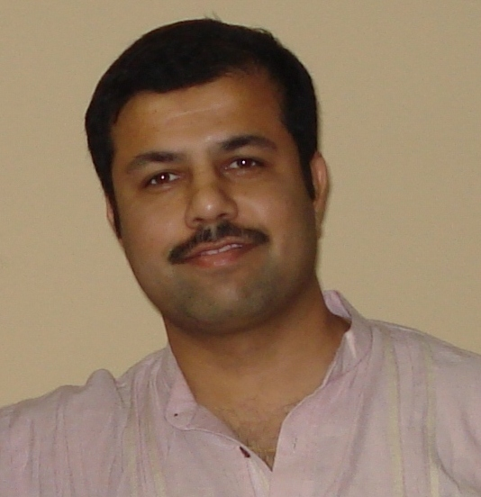

Research
Sujit's interest broadly lie in the formal aspects of software engineering. He is particularly interested in applying formal techniques to improve the productivity of software engineers in various engineering domains. The domains he has worked in are:
Web-services
Embedded software systems
Sujit's current research efforts are in the development of advanced techniques of testing embedded software systems, formal specification of web-applications, and specification based testing of web-applications.
Teaching
Summer 2013
Programming with Java (G)
Autumn 2013
Software Testing (G)
Spring 2014
Software Testing (G)
Programming Languages (G)
Summer 2014
Programming with Java (G)
Autumn 2014
Compiler Design (G)
Programming I - Python (UG)
Spring 2015
Software Testing (G)
Programming Languages (UG)
Autumn 2015
Programming I - Python (UG)
Programming II - Java (UG)
Students
Research
Khusbu Bubna. MS, August 2013 - present
Kartika Venkatesan. PhD, August 2014 - present
Ananta Kumar Das. MS, August 2015 - present
Course
A Message to Prospective Students
First of all, let me thank the students who write to me seeking joint work whether as PhD, MS, or internship. Being written to this way is frankly flattering. Having said that, let me also share that the number of such messages is somewhat beyond what I can process even in a cursory manner. My instinct is to give a polite and personalised reply to each carefully worded letter that comes to my inbox, even if, it has to be a refusal. Unfortunately, even that is not scalable. It has come to our notice that many of these mails aren't so personal as they are designed to sound. Most are infact spams. The same text almost definitely gets copied to dozens of academicians across the country.
Therefore, here's a little request. Please be specific in your message as to why you have written to me. Have you read my profile? Or have come across my work? Or have been referred to me by someone? Or share a common technical interest? If yes, then which? In short, leave significant clues in the text of your message to tell that the message is a hand-crafted one, and not mass-mailed to 50-100 people.
If I am convinced that I am hearing from a human being and not a robot, I will be very happy to reply to your message.
Publications
Sujit Kumar Chakrabarti, and Y. N. Srikant. Specification Based Regression Testing using Explicit State Space Enumeration, ICSEA 2006, Tahiti, French Polynesia, November 2006
Sujit Kumar Chakrabarti, and Y. N. Srikant. Test Sequence Computation for Regression Testing of Reactive Systems, ISEC 2008, Hyderabad, India, February 2008
Sujit Kumar Chakrabarti, and Srihari Sukumaran. Using Spreadsheets for Finite State Modelling, ISEC 2009, Pune, India, February 2009
Sujit Kumar Chakrabarti, and Prashant Kumar. Test-the-REST: An Approach to Testing RESTful Web-services, Service Computation 2009, Athens, Greece, November 2009
Sujit Kumar Chakrabarti, and Prashant Kumar. Software Reliability Prediction in Philips Healthcare -- An Experience Report, International Symposium on Software Reliability Engineering (ISSRE) 2009, Mysore, India, November 2009
Sujit Kumar Chakrabarti, and Reswin R. Rodriquez. Connected Testing of RESTful Web-Services, ISEC 2010, Mysore, India, February 2010
Sukanta Bhatt, and Sujit Kumar Chakrabarti. Web Services Testing: New Challenges, New Approaches, STeP-IN Summit, Bangalore, India, 2010
Sujit Kumar Chakrabarti, and Ramesh S. SymTest : A Framework for Symbolic Testing of Embedded Software, ISEC 2016, Goa, India, February 2016